COMIDAS TRADICIONALES!

La región de Tierra Caliente caracterizada por un sin fin de olores, sabores y colores
que dan identidad de una gran región calentana, enorgulleciendo a su gente, brindando identidad a sus pueblos y lo mejor a sus visitantes.
Parte de su identidad es la gastronomía, exquisitos sabores de platillos típicos de la region
Iguana entera al horno al mojo de ajo
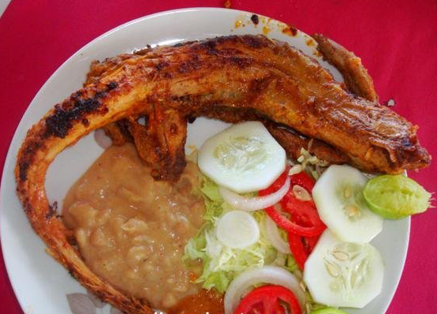
La iguana es un platillo muy tradicional en la region de la tierra caliente
La iguana es un platillo muy tradicional en la region de la tierra caliente
a pesar de que se encuentra de peligro de extincion, se sigue consumiendo.
ya que se dice que su carne y sangr tienen muchos beneficios para la salud.
PILINQUES

Es el cuerito del cuche,lo puedes preparar con limon,chilito picado,cebollita y vinagre.
APORREADO

Este es el platillo mas tradicional de esta region.Se prepara con huevo y carne seca
CHIPIL
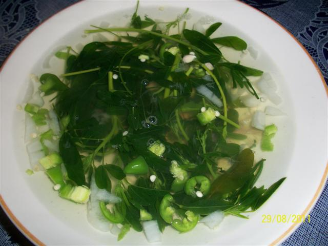
Este platillo es muy tradicional en esta region, las hojas de la planta pueden ser hervidas o servidas frescas.
Este platillo es muy tradicional en esta region, las hojas de la planta pueden ser hervidas o servidas frescas.
La hoja es rica en proteína y de alto contenido de lisina. Además posee un elevado contenido de carotenos, calcio y hierro.
UCHEPOS
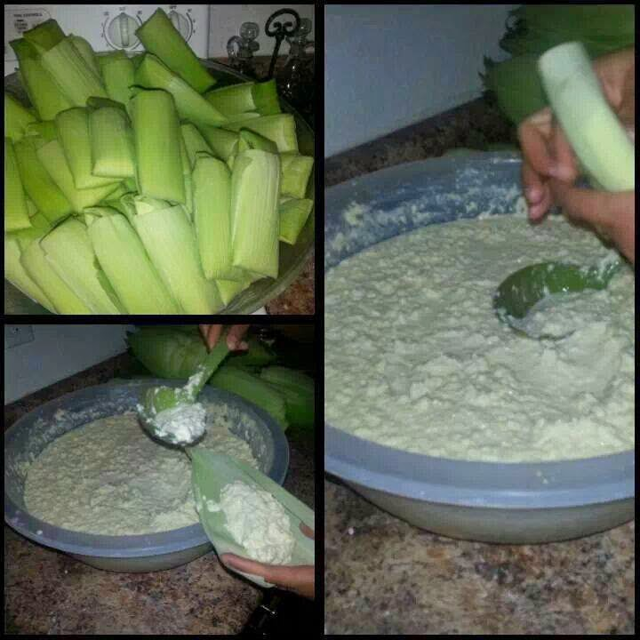
El uchepo es un platillo típico de esta region, Consiste en un tamal elaborado con maíz tierno.
El uchepo es un platillo típico de esta region, Consiste en un tamal elaborado con maíz tierno.
El uchepo se sirve solo, o bien con una salsa de tomatillo verde o salsa de jitomate cocido y acompañado de queso fresco o crema.
Como postre suele servirse bañado con crema de rancho.
HUILOTA
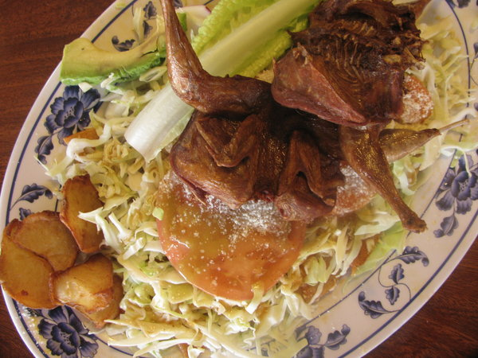
Esta ave se ah vuelto un platillo muy esquisito es esta region por su gran sabor y nutrientes que tiene.
PICADITAS
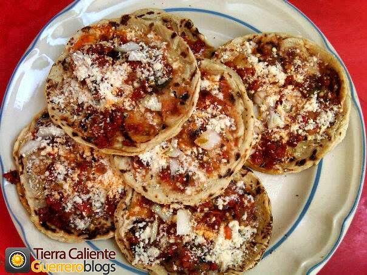
Son alimentos tipicos de esta region preparados de forma similar a las tostadas,
Son alimentos tipicos de esta region preparados de forma similar a las tostadas,
pero con una caracteristica peculiar,
la base de estas es una tortilla hecha a mano con un diametro menor a la de las tortillas comunes
y con un borde hecho de la misma que sirve para retener el alimento que se vierte en la parte superior.
MOJARRA
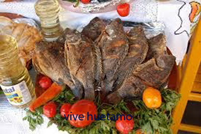
Con esta mojarra se pueden preparar diferentes platillos como:
Con esta mojarra se pueden preparar diferentes platillos como:
Mojarra dorada,mojarra a la plancha,caldo de mojarra,mojarra empapelada etc.
PATITAS

Este platillo consiste en patitas de puerco cocidas y mezcladas con verduras en vinagre lo que le da un sabor unico.
Este platillo consiste en patitas de puerco cocidas y mezcladas con verduras en vinagre lo que le da un sabor unico.
Pueden comerse solas o acompañarlas con tostadas o enchiladas.
Tacos De Carnitas

Los Tacos de Carnitas de huetamo son muy famosos por su gran sabor que tienen.
Combas
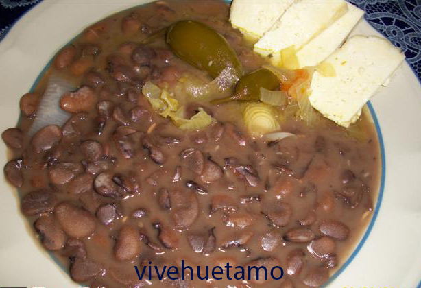
Este es un de los platillos que no puede faltar en la mesa de los hogares huetamenses
Este es un de los platillos que no puede faltar en la mesa de los hogares huetamenses
ya que tiene muchas vitaminas y minerales y por su facil elaboracion y por ser muy economico.
Generalmente es acompañado con chiles en vinagre,chicharron o queso.
ILAMA
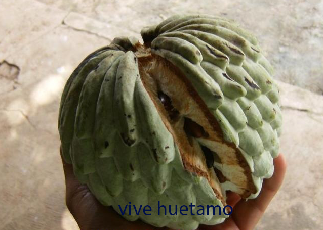
La ilama es una fruta muy codiciada que se da cada año en esta region.
POZOLE
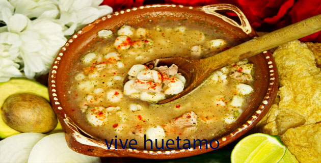
CARNITAS
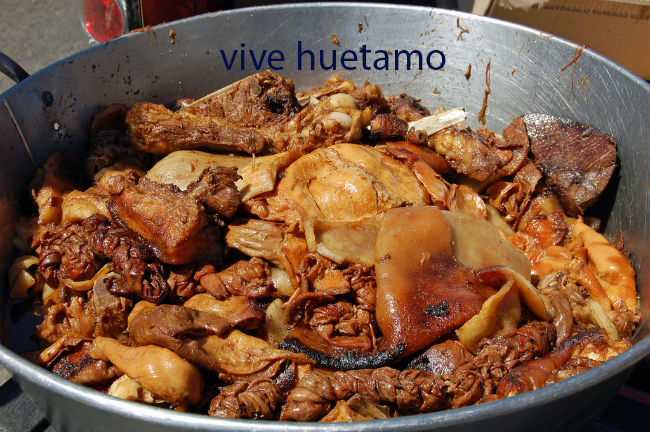
ATOLE CON TAMALES
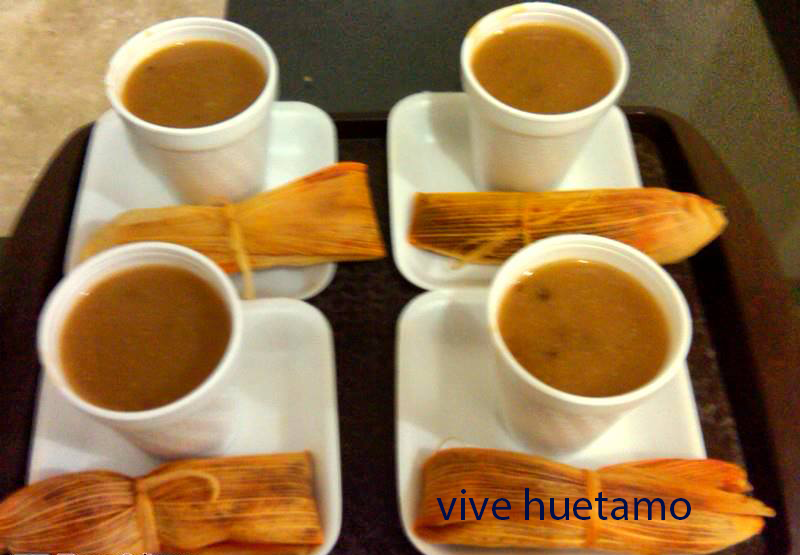
TOQUERES
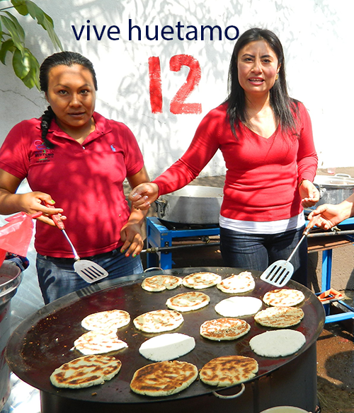
CHORIZO
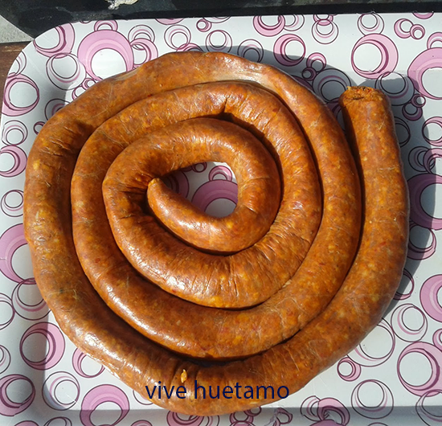
Frijoles Puercos
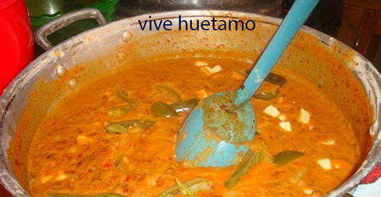